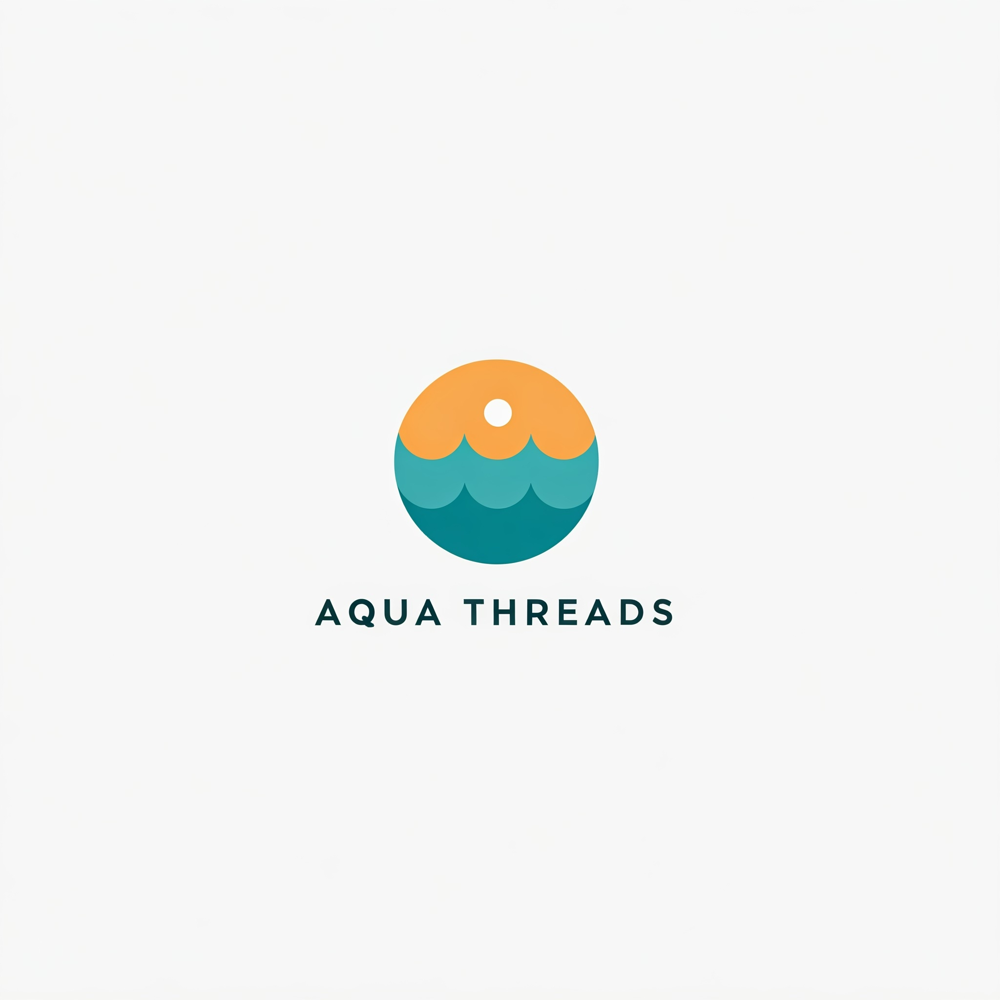

Our History
AquaThreads was founded in 2010 by visionary eco-entrepreneur Sarah Green in response to the growing need for sustainable fashion. Starting as a small workshop in Green City, AquaThreads focused on creating organic cotton t-shirts that were stylish, comfortable, and kind to the environment.
Why Choose AquaThreads?
As the world became more aware of the environmental impact of fast fashion, AquaThreads expanded its product line to include a variety of sustainable clothing options such as recycled denim jeans, eco-friendly outerwear, and biodegradable accessories. Over the years, we’ve grown from a local startup to a globally recognized brand, all while maintaining our mission to reduce water pollution and promote sustainable practices. Today, AquaThreads stands as a leader in the eco-fashion movement, using cutting-edge, water-saving production techniques and partnering with like-minded suppliers to make a positive impact on the planet. With every garment, we strive to inspire change and support a cleaner, greener future for generations to come.